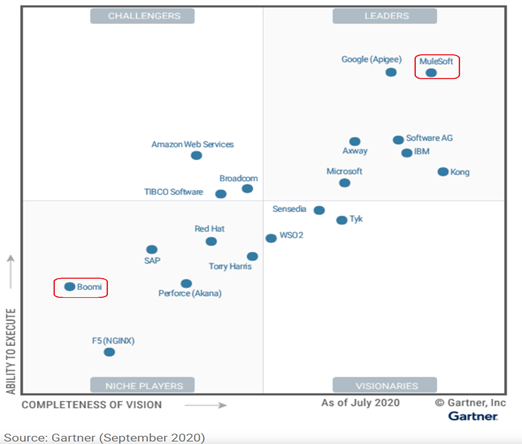

This blog post was written by Suren Machiraju.
Let us start with a quick primer so that we all have a common understanding of the terminology we use here.
An Integration Platform is software that integrates different applications and their services. It is a set of automated tools that integrate software applications that are deployed in different environments. Large businesses that run enterprise-level systems often use integration platforms to integrate applications and data that live on-premises and in both public and private clouds.
An Integration Platform hosts application servers, infrastructure, and data, and provisions integration tooling and middleware. These tools help developers build, test, deploy, and manage software that lives in the cloud.
Integration Platforms provide many capabilities, including the following:
Both Dell Boomi and MuleSoft Platforms are known to be widely used in private as well as public sector/governmental organizations across most domains, including manufacturing, healthcare, finance, retail, etc. Given the robustness of the platform and good customer service and support, both Boomi and MuleSoft have a similar rating of around 4.3 stars provided by 100s of users. You can read more about the published Gartner Group survey results here.
Dell Boomi AtomSphere is an on-demand, multi-tenant cloud integration platform for connecting cloud and on-premises applications and data. It enables customers to design cloud integration processes called Atoms and transfer data between cloud and on-premises applications. Boomi provides an integration platform as a service offering (iPaaS), which enables the connection of applications and data services. It is a low-code development platform. The platform provides API lifecycle management and event-driven architecture features for cloud integration. Boomi is well suited for integrating ERP systems such as NetSuite, SAP, and Salesforce. As a developer, here is the neat thing about Boomi: all the certifications provided by Boomi are free. Reference: https://boomi.com/content/video/demo/10min-demo
MuleSoft is a data integration platform built to connect a variety of data sources and applications and perform analytics and ETL processes. Mule, a runtime engine of Anypoint Platform, is a lightweight Java-based enterprise service bus (ESB) and integration platform that allows developers to connect applications easily and enables them to exchange data. It not only offers a solution that meets the requirements but goes beyond the function of a single-purpose integration tool to provide a complete integration platform that can be accessed through a single interface. MuleSoft offers a more flexible and scalable solution that provides the business functions they need in this digital age. If you wish to learn MuleSoft, you can learn it from U Course (self-study). Reference: https://www.MuleSoft.com/
To better understand both offerings, let us dig deeper into both these compelling offerings. To provide better readability, I am presenting the comparative analysis in a table form and pivoting around the most critical features.
| Feature | Dell Boomi | MuleSoft |
|---|---|---|
| Framework | Boomi is used in the traditional ETL Middleware approach | MuleSoft is an API-led network. It can connect across multiple apps and business units |
| Capability | Cloud and on-premise integration solutions only | On-premise, cloud, and hybrid |
| Connectors: Data Sources and Destinations | Supports application and technology connectors. There are 80 application connectors and 22 technology connectors | Supports around 300 connectors |
| API-Management | Real-Time Dashboard | API Manager |
| Development Tools | Application/Data Integration, API Management, B2B/EDI Management, Master Data Management, Flow Management | Anypoint Studio, Anypoint Connectors, Anypoint Design Center, Anypoint Exchange, and Anypoint Management Center |
| Transformations/Mappings | Handles process executions through procedures it calls shapes | Handles process executions through processors. |
| Training | Provides On-Demand and instructor-led training | Mostly provides digital material training |
| Support and Documentation | Provides onsite consulting for support. They also provide email and phone support | Provides online, telephone, and email support |
| Licensing Model | API Driven | Volume Driven |
| Business Continuity | TGP and Francisco Partners are acquiring Boomi from Dell for an estimated $4 Billion in 2021 | Salesforce completed the acquisition of MuleSoft in 2018 |
Both Boomi and MuleSoft have great pedigrees; however, understand that MuleSoft has an edge in terms of modern architecture patter; out-of-box connectivity options; and pricing model. I also appreciate that MuleSoft’s future with Salesforce is well understood; Boomi’s recent acquisition by a private equity firm creates a certain amount of uncertainty and angst. After all, its Integration Platforms are ‘sticky’ and need Herculean efforts to undo!
To conclude, use this screenshot from a recent Gartner release that could sway your opinion.
